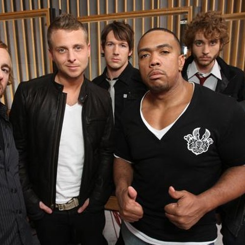

De basis voor de band werd al in 1996 gelegd. Ryan Tedder en gitarist Zach Filkins leerden elkaar kennen
tijdens hun eindexamenjaar op de Colorado Springs Christian High School. Tijdens een autoritje kwamen ze
erachter dat ze dezelfde muzieksmaak deelden (zoals U2 en Peter Gabriel) en besloten ze een band op te
richten onder de naam This Beautiful Mess. Na een paar kleine optredens voor vrienden en familie gingen
de twee na hun eindexamen echter ieder naar een andere universiteit, waardoor de band destijds stil kwam
te liggen
De hereniging
In 2002 zochten Tedder en Filkins opnieuw contact. Ze verhuisden naar Los Angeles om hun muzikale dromen
serieus na te jagen. Hier vormden ze een nieuwe band, destijds kortweg Republic genoemd. Nadat ze merkten
dat die naam al door andere groepen werd gebruikt, veranderden ze deze definitief in OneRepublic. Al snel
sloten ook Drew Brown (gitaar), Eddie Fisher (drums) en later Brent Kutzle (bas/cello) zich aan.
Gecanceld
Binnen negen maanden na hun oprichting in L.A. tekende de band een contract bij het grote label Columbia
Records. Ze werkten tweeënhalf jaar lang aan hun debuutalbum, maar toen sloeg het noodlot toe: slechts twee
maanden voor de geplande release zette Columbia Records de band op straat. De band stond met lege handen en
mocht hun muziek van de platenmaatschappij niet zomaar uitbrengen.
MySpace
Ryan Tedder pikte de afwijzing niet en besloot puur uit frustratie de nummers 'Apologize' en 'Stop and Stare' op
het destijds immens populaire socialmediaplatform MySpace te uploaden. Dit bleek een meesterzet: binnen 60 dagen
ging de muziek volledig viraal. OneRepublic werd al snel de grootste ongetekende act op MySpace ter wereld, met
honderden miljoenen plays. Ineens stonden alle platenlabels die hen eerder negeerden weer voor de deur.
Timbaland
De beroemde hiphopproducent Timbaland – die Ryan Tedder nog kende uit diens eerdere jaren als beginnend songwriter –
zag het succes op MySpace en besloot de band te contracteren bij zijn eigen label, Mosley Music Group (onderdeel van
Interscope)

Timbaland maakte een remix van het nummer 'Apologize' en zette deze op zijn eigen album Shock Value (2007). De mix werd
een gigantische wereldhit, stond in zestien landen op nummer 1 en brak alle airplay-records op de radio. Kort daarna bracht
OneRepublic hun eigen debuutalbum Dreaming Out Loud uit, waarmee hun status als wereldwijd bekende band definitief
was gevestigd.